| Тема 1. Делегаты (дополнительный материал). | ||
| Назад | ||
|
Делегаты представляют такие объекты, которые указывают на методы. То есть делегаты - это указатели на методы и с помощью делегатов мы можем вызвать данные методы. Определение делегатовДля объявления делегата используется ключевое слово delegate, после которого идет возвращаемый тип, название и параметры. Например:
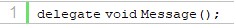 Делегат Message в качестве возвращаемого типа имеет тип void (то есть ничего не возвращает) и не принимает никаких параметров. Это значит, что этот делегат может указывать на любой метод, который не принимает никаких параметров и ничего не возвращает. Рассмотрим применение этого делегата:
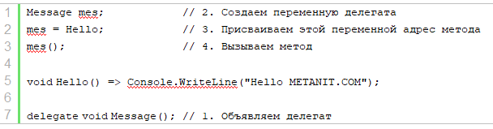 Прежде всего сначала необходимо определить сам делегат:
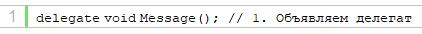 Для использования делегата объявляется переменная этого делегата:
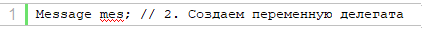 Далее в делегат передается адрес определенного метода (в нашем случае метода Hello). Обратите внимание, что данный метод имеет тот же возвращаемый тип и тот же набор параметров (в данном случае отсутствие параметров), что и делегат.
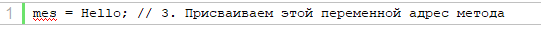 Затем через делегат вызываем метод, на который ссылается данный делегат:
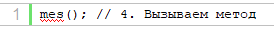 Вызов делегата производится подобно вызову метода. При этом делегаты необязательно могут указывать только на методы, которые определены в том же классе, где определена переменная делегата. Это могут быть также методы из других классов и структур.
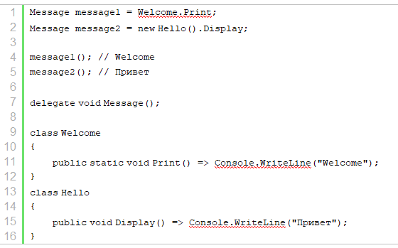 Место определения делегатаЕсли мы определяем делегат в программах верхнего уровня (top-level program), которую по умолчанию представляет файл Program.cs начиная с версии C# 10, как в примере выше, то, как и другие типы, делегат определяется в конце кода. Но в принципе делегат можно определять внутри класса:
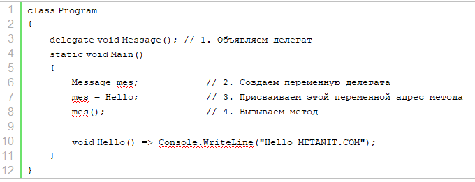 Либо вне класса:
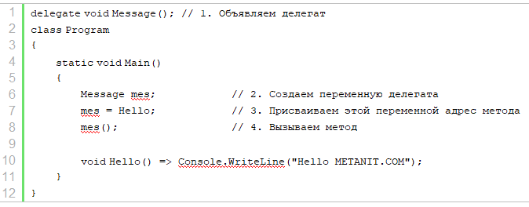 Параметры и результат делегатаРассмотрим определение и применение делегата, который принимает параметры и возвращает результат:
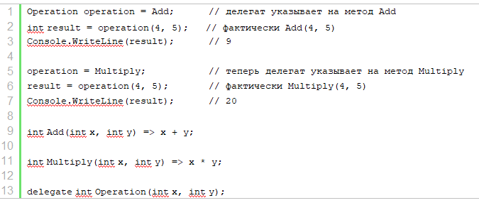 В данном случае делегат Operation возвращает значение типа int и имеет два параметра типа int. Поэтому этому делегату соответствует любой метод, который возвращает значение типа int и принимает два параметра типа int. В данном случае это методы Add и Multiply. То есть мы можем присвоить переменной делегата любой из этих методов и вызывать.
Поскольку делегат принимает два параметра типа int, то при его
вызове необходимо передать значения для этих параметров: Присвоение ссылки на методВыше переменной делегата напрямую присваивался метод. Есть еще один способ - создание объекта делегата с помощью конструктора, в который передается нужный метод:
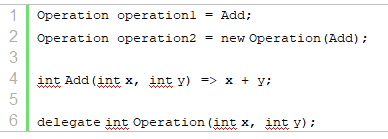 Оба способа равноценны. Соответствие методов делегатуКак было написано выше, методы соответствуют делегату, если они имеют один и тот же возвращаемый тип и один и тот же набор параметров( Функция (метод), добавляемая к делегатам, должна иметь тот же тип и сигнатуру, что и делегат). Но надо учитывать, что во внимание также принимаются модификаторы ref, in и out. Например, пусть у нас есть делегат:
Этому делегату соответствует, например, следующий метод:
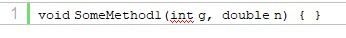 А следующие методы НЕ соответствуют:
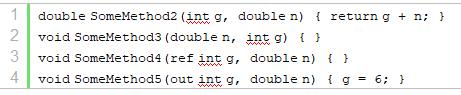 Здесь метод SomeMethod2 имеет другой возвращаемый тип, отличный от типа делегата. SomeMethod3 имеет другой набор параметров. Параметры SomeMethod4 и SomeMethod5 также отличаются от параметров делегата, поскольку имеют модификаторы ref и out. Добавление методов в делегатВ примерах выше переменная делегата указывала на один метод. В реальности же делегат может указывать на множество методов, которые имеют ту же сигнатуру и возвращаемые тип. Все методы в делегате попадают в специальный список - список вызова или invocation list. И при вызове делегата все методы из этого списка последовательно вызываются. И мы можем добавлять в этот список не один, а несколько методов. Для добавления методов в делегат применяется операция +=:
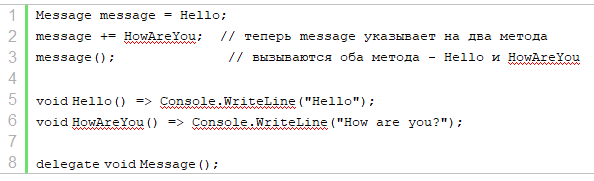 В данном случае в список вызова делегата message добавляются два метода - Hello и HowAreYou. И при вызове message вызываются сразу оба этих метода. Однако стоит отметить, что в реальности будет происходить создание нового объекта делегата, который получит методы старой копии делегата и новый метод, и новый созданный объект делегата будет присвоен переменной message. При добавлении делегатов следует учитывать, что мы можем добавить ссылку на один и тот же метод несколько раз, и в списке вызова делегата тогда будет несколько ссылок на один и то же метод. Соответственно при вызове делегата добавленный метод будет вызываться столько раз, сколько он был добавлен:
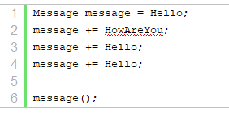 Консольный вывод:
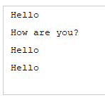 Подобным образом мы можем удалять методы из делегата с помощью операций -=:
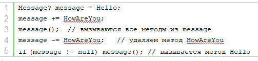 При удалении методов из делегата фактически будет создаваться новый делегат, который в списке вызова методов будет содержать на один метод меньше.
Стоит отметить, что при удалении метода может сложиться
ситуация, что в делегате не будет методов, и тогда переменная
будет иметь значение null. Поэтому в данном случае переменная
определена не просто как переменная типа Кроме того, перед вторым вызовом мы проверяем переменную на значение null. При удалении следует учитывать, что если делегат содержит несколько ссылок на один и тот же метод, то операция -= начинает поиск с конца списка вызова делегата и удаляет только первое найденное вхождение. Если подобного метода в списке вызова делегата нет, то операция -= не имеет никакого эффекта. Объединение делегатовДелегаты можно объединять в другие делегаты. Например:
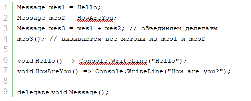 В данном случае объект mes3 представляет объединение делегатов mes1 и mes2. Объединение делегатов значит, что в список вызова делегата mes3 попадут все методы из делегатов mes1 и mes2. И при вызове делегата mes3 все эти методы одновременно будут вызваны. Вызов делегатаВ примерах выше делегат вызывался как обычный метод. Если делегат принимал параметры, то при его вызове для параметров передавались необходимые значения:
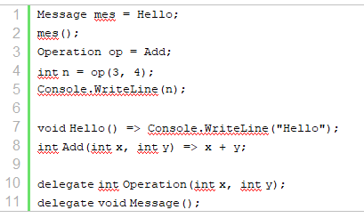 Другой способ вызова делегата представляет метод Invoke():
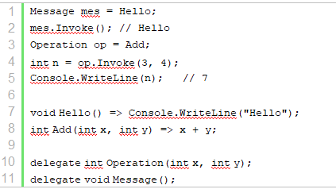 Если делегат принимает параметры, то в метод Invoke передаются значения для этих параметров. Следует учитывать, что если делегат пуст, то есть в его списке вызова нет ссылок ни на один из методов (то есть делегат равен Null), то при вызове такого делегата мы получим исключение, как, например, в следующем случае:
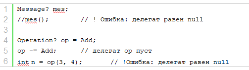 Поэтому при вызове делегата всегда лучше проверять, не равен ли он null. Либо можно использовать метод Invoke и оператор условного null:
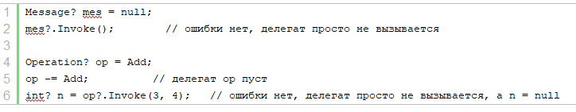 Если делегат возвращает некоторое значение, то возвращается значение последнего метода из списка вызова (если в списке вызова несколько методов). Например:
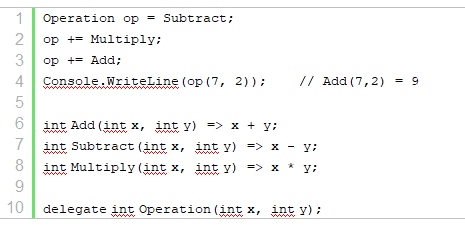 Обобщенные делегатыДелегаты, как и другие типы, могут быть обобщенными, например:
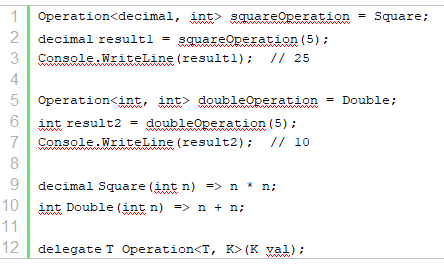 Здесь делегат Operation типизируется двумя параметрами типов. Параметр T представляет тип возвращаемого значения. А параметр K представляет тип передаваемого в делегат параметра. Таким образом, этому делегату соответствует метод, который принимает параметр любого типа и возвращает значение любого типа.
В прогамме мы можем определить переменные делегата под
определенный метод. Например, делегату Делегаты как параметры методовТакже делегаты могут быть параметрами методов. Благодаря этому один метод в качестве параметров может получать действия - другие методы. Например:
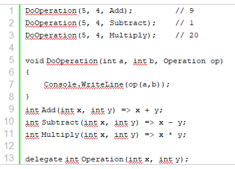 Здесь метод DoOperation в качестве параметров принимает два числа и некоторое действие в виде делегата Operation. В внутри метода вызываем делегат Operation, передавая ему числа из первых двух параметров. При вызове метода DoOperation мы можем передать в него в качестве третьего параметра метод, который соответствует делегату Operation. Возвращение делегатов из методаТакже делегаты можно возвращать из методов. То есть мы можем возвращать из метода какое-то действие в виде другого метода. Например:
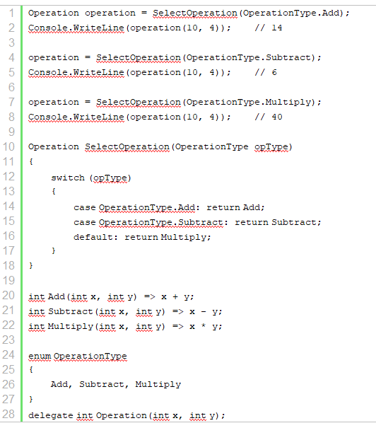
В данном случае метод
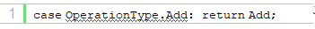 При вызове метода SelectOperation мы можем получить из него нужное действие в переменную operation:
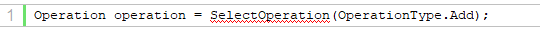 И при вызове переменной operation фактически будет вызываться полученный из SelectOperation метод:
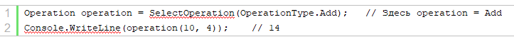 |
||
| Конспект подготовлен Бакулиным А. М. 2022 год. | ||